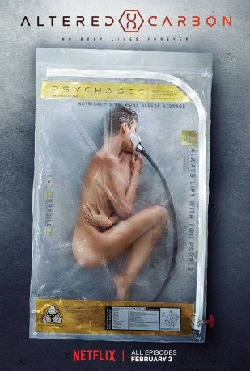

")
Alternativ: Altered Carbon
 
 IMDB-Wertung: 8.2 / 10
IMDB-Wertung: 8.2 / 10  Metascore:
Metascore: 
Im 26. Jahrhundert kann der menschliche Geist digitalisiert und die Seele von einem Körper in den nächsten übertragen werden – oder eben digital gespeichert. Der frühere Elitekrieger Takeshi Kovacs, ein mit mentalen Ausnahmefähigkeiten ausgestattetes Mitglied des Envoy-Corps, war nach einer Verurteilung 500 Jahre „eingelagert“ und wird nun in einer Zukunft reaktiviert, die er eigentlich zu verhindern versucht hatte. Sollte es ihm gelingen einen Mord zu klären in dieser Welt, in der Technologie den Tod fast vollständig verdrängt hat, könnte er die Chance auf ein neues Leben erhalten.
Jahr: 2018
Dauer: 58 Minuten
FSK:
Land: USA Studio: NetflixTonspuren: DD5.1 - ,
Untertitel: Deutsch, Englisch,
Auflösung: 720p (1280x640) Größe: 1126 MB
Genre: Thriller, Drama, Sci-Fi, TV-Serie
Regisseur: Uta Briesewitz, Peter Hoar, Nick Hurran, Andy Goddard, Alex Graves, Miguel Sapochnik
Drehbuch: Mythology Entertainment
Soundtrack:
Darsteller:
 Martha Higareda als Kristin Ortega 8 episodes, 2018
Martha Higareda als Kristin Ortega 8 episodes, 2018 Hiro Kanagawa als Captain Tanaka 7 episodes, 2018
Hiro Kanagawa als Captain Tanaka 7 episodes, 2018 Teach Grant als Jimmy DeSoto / ... 6 episodes, 2018
Teach Grant als Jimmy DeSoto / ... 6 episodes, 2018 Joel Kinnaman als Takeshi Kovacs 6 episodes, 2018
Joel Kinnaman als Takeshi Kovacs 6 episodes, 2018 Zahf Paroo als Curtis 6 episodes, 2018
Zahf Paroo als Curtis 6 episodes, 2018 James Purefoy als Laurens Bancroft 6 episodes, 2018
James Purefoy als Laurens Bancroft 6 episodes, 2018 Waleed Zuaiter als Abboud / ... 6 episodes, 2018
Waleed Zuaiter als Abboud / ... 6 episodes, 2018 Adam Busch als Mickey 5 episodes, 2018
Adam Busch als Mickey 5 episodes, 2018 Ato Essandoh als Vernon Elliot 4 episodes, 2018
Ato Essandoh als Vernon Elliot 4 episodes, 2018 Byron Mann als O. G. Kovacs / ... 3 episodes, 2018
Byron Mann als O. G. Kovacs / ... 3 episodes, 2018 Arnold Pinnock als Hemmingway 3 episodes, 2018
Arnold Pinnock als Hemmingway 3 episodes, 2018 Fraser Aitcheson als Rhino Man 2 episodes, 2018
Fraser Aitcheson als Rhino Man 2 episodes, 2018 Matt Frewer als Carnage 2 episodes, 2018
Matt Frewer als Carnage 2 episodes, 2018 Paul Lazenby als Shadow Trooper 2 episodes, 2018
Paul Lazenby als Shadow Trooper 2 episodes, 2018 Tahmoh Penikett als Dimitri Kadmin 2 episodes, 2018
Tahmoh Penikett als Dimitri Kadmin 2 episodes, 2018 Anna Van Hooft als Clarissa 2 episodes, 2018
Anna Van Hooft als Clarissa 2 episodes, 2018 Garfield Wilson als Mateo Gomez 2 episodes, 2018
Garfield Wilson als Mateo Gomez 2 episodes, 2018 Primo Allon als Dodd 1 episode, 2018
Primo Allon als Dodd 1 episode, 2018 Nicole Anthony als MedTech 1 episode, 2018
Nicole Anthony als MedTech 1 episode, 2018 Alison Araya als Female Investigator 1 episode, 2018
Alison Araya als Female Investigator 1 episode, 2018 Daniel Bernhardt als Jaeger 1 episode, 2018
Daniel Bernhardt als Jaeger 1 episode, 2018 Bruce Blain als Resleeve Guard 1 episode, 2018
Bruce Blain als Resleeve Guard 1 episode, 2018Datei: X:\HD-Serien\Altered Carbon - Das Unsterblichkeitsprogramm\Altered Carbon - Das Unsterblichkeitsprogramm S01E01.mkv seit 02.02.2018
Festplatte: HD Serien(A-H)
 Es gibt insgesamt 182 Filme in der Gruppe 'HD-Serien'
Es gibt insgesamt 182 Filme in der Gruppe 'HD-Serien'